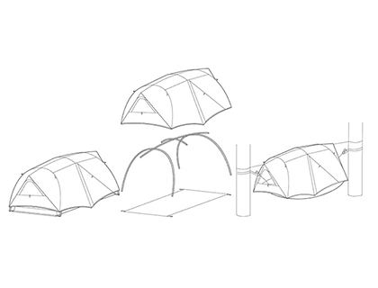
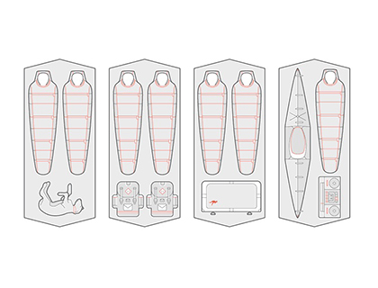
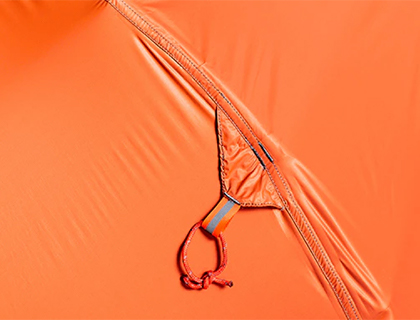
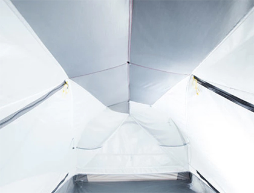

Clean design meets complete versatility. The Sunda is a game-changing tent hammock, designed for any occasion, any terrain, any time.
Is it a Tent? A Hammock? An Animal? Yes, Yes, and Yes. You asked us for a world class tent. And we asked ourselves, what if?
The Sunda is now ready for your lifetime of adventure.
Why?
-

Versatility
We know the difficulty of matching variable landscapes with the changing needs of your daytime, nighttime, and weekend adventures, so we’ve created a product that can do it all, and then some. Think of the Sunda as four unique shelters in one: your best-in-class tent, all-in-one camping hammock, ultra-light shelter, and minimalist hammock.
-

Livability
With room for 2 plus all your gear / or dogs / or kids / the Sunda™ offers 35 sf of vast interior living space. Sunda’s peak height at 40” provides ample headroom, but what is truly jaw-dropping: Sunda’s peak height extends the full 8ft length of the tent! Most tents boast about sit-up height, but their high point is usually isolated within a few square feet before walls start sloping down. Sunda’s maximized sit-up height is achieved by its flat ridge pole and attached brow pole.
-

Durability
We designed Sunda for more than the average tent’s 7-days-per-year use. Most high quality tents prioritize cutting weight at all cost, and durability is often the first tradeoff. In the rugged outdoors, however, durability should be one of the highest priorities. We over-engineered the floor and fly fabrics by amplifying abrasion resistance and tear strength. Rest easy, knowing your gear is adventure-proof.
-

Lumos
Light Enhancing: A little light goes a long way with Lumos™ light enhancing fabric. Our goal in creating Lumos was to amplify the performance of a single headlamp or lantern, creating a beautiful glow and eliminating darker spots in your tent.
Still don't know why?
With the help of our MOB community, we've spent the last few years discovering the most important qualities in a tent: versatility, durability and livability. When designing the Sunda, we made sure that it could adapt to your needs in any environment, outlast any adventure–big or small, and feel like home wherever you decide to set up camp.
Then, as the lovers of hammocks that we are, we wondered, “why not use what we know about hammocks and take this tent off the ground?" Add a little inspiration from the animal kingdom (a flying lemur named the Sunda!), and we were off to the races…
- The Sunda stands alone as a best-in-class, freestanding 2(+) person tent. Stretching to 8 feet 4 inches long and 4 feet 2 inches wide, tent mode boasts 35 square feet of the most livable space of any tent in its category. Built with cutting-edge, ultra-durable fabrics and constructed with time-perfected production techniques, the Sunda outlasts and under-weighs comparable tents.
- The Sunda doesn’t stop as a ground dweller. Modeled after the Sunda Flying Lemur, this tent transforms and goes aerial, converting to a one-person, all-in-one hammock shelter. Elevate your overnight experience, give your back a break from the rocks, and let the gentle breeze rock you to sleep.
- Using Sunda’s fly, poles and footprint to create an on-the-go sanctuary, Fly Light™ mode acts as an ultra-light shelter to save pack weight in circumstances not requiring insect protection. Fly Light™ mode opens new opportunities for use as a pool-side beach shade, park picnic shelter, festival VIP hangout, and more.
- Kick your feet up on minimalist adventures and bring your afternoon read into the trees -- and even let two companions share your Sunda’s Fly Light™ ultralight shelter. In hammock only mode, you can have the mesh hang underneath for easy ‘lounge mode’ access, or you can engage the ridgeline and attached the no-see-um mesh above you for ‘jungle mode’.
Fun Fact: The Sunda gets it’s name from the incredibly adaptable Sunda flying lemur, also know as the Malayan flying lemur. These arboreal gliding mammals are members of the Colugo species found in Southeast Asia, known for their ability to leap between trees using the flaps of skin between their legs to glide from higher to lower locations. We designed our Sunda to replicate the intelligent design of the Sunda flying lemur when outstretched and gliding between trees, recognizing the finesse this animal achieves between it’s tree-dwelling adaptations and ability to take flight.
Join the tent hammock revolution